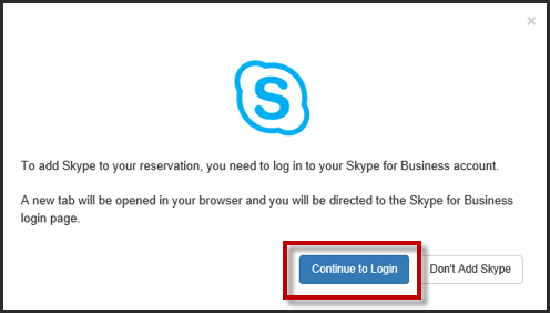
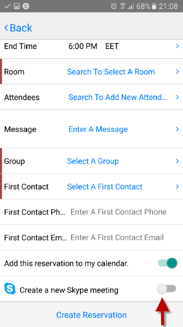
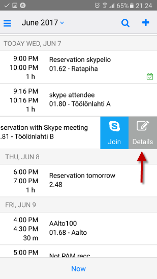
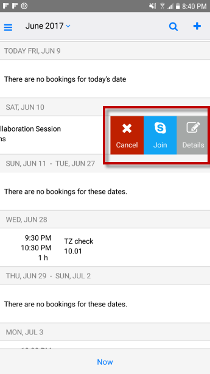

Skype for Business in the EMS Mobile App
The EMS integration of Skype for Business in the Mobile App allows users to easily incorporate instant messaging and audio/video conferencing to their meetings without the need for A/V support. Skype for Business is currently available for the EMS Mobile App, EMS Web App, and EMS for Outlook.
| |
Important Notes:
- Skype for Business is ONLY available on Exchange-enabled templates.
- Users cannot edit or remove Skype for Business meetings from their reservations. Users can delete the link but the Join link will remain enabled.
- For more information about Configuring Skype for Business, click here.
|
This topic includes instructions on:
To add Skype for Business in the EMS Mobile App:
- Sign into your EMS Mobile App.
- Create your reservation. Select your room and invite attendees.
- At the bottom of the screen, there is a Create a New Skype Meeting toggle. If this is your first time using Skype for Business, an authentication form will appear.

- If the user's Skype account is authenticated, they can continue creating their reservation.
- If the user's Skype account is not authenticated, an authentication modal will appear.
- If the user fails to authenticate their Skype account, the Skype toggle will be disabled.

|
Tip: Authentication to Skype is dependent upon the deployment type.
There are three deployment types for Skype for Business:
- On Premise: This deployment for Skype for Business does not retain a token and requires authentication every 8 hours. As a result, you will be asked to sign in every 8 hours.
- Online: This deployment retains the token so only an initial authentication is required.
- Hybrid: This deployment has the same authentication method as the Online deployment.
For more information regarding authentications in Skype for Business, please click here.
|
- Following authentication, slide the toggle to add Skype for Business to your reservation.

- After successful authentication, you should receive a message that Skype has been successfully added to your reservation. To remove Skype from your reservation, slide the toggle to the disabled position.
- Click Create Reservation. Skype meeting information will appear in your meeting invitation and will be stored on the EMS database.

|
Important: Once you have added Skype to your reservation, the meeting attendees will receive an email notification including the Join Skype link and call-in information.
|
- Meeting hosts can view reservation details—including Skype meeting information—by navigating to the Home page. Swipe to the left of the meeting you wish to view and click Details.

|
|
Tip:Once Skype has been added to your meeting, the Skype meeting information will appear in all EMS applications that have been integrated with Skype for Business (i.e., EMS for Outlook and EMS Web Apps).
|
To join a Skype for Business meeting in the EMS Mobile App:
1. From the Home page, navigate to the meeting you wish to attend. Swipe left. From this drawer, you will be able to Cancel, Join, and view Details.

- Click Join to be connected to your meeting.
Page tags: article:topic